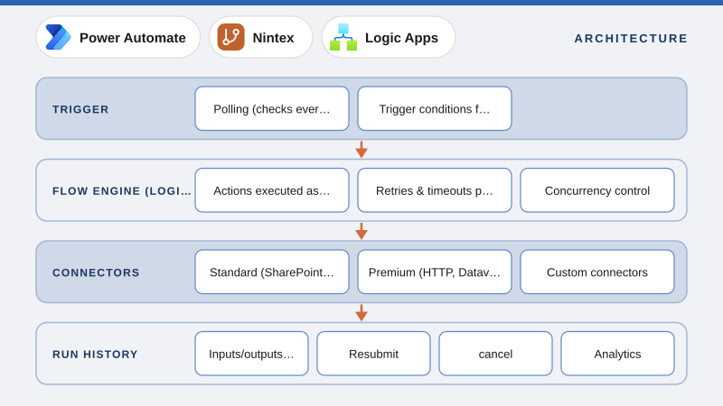

01
What is Power Automate? Cloud Flows, Desktop Flows and How Flows Run
Power Automate explained, covering flow types (automated, instant, scheduled, desktop, business process), how the engine executes runs, connectors and licensing tiers, run history, and where Power Automate fits next to Logic Apps, Nintex and SharePoint workflows.